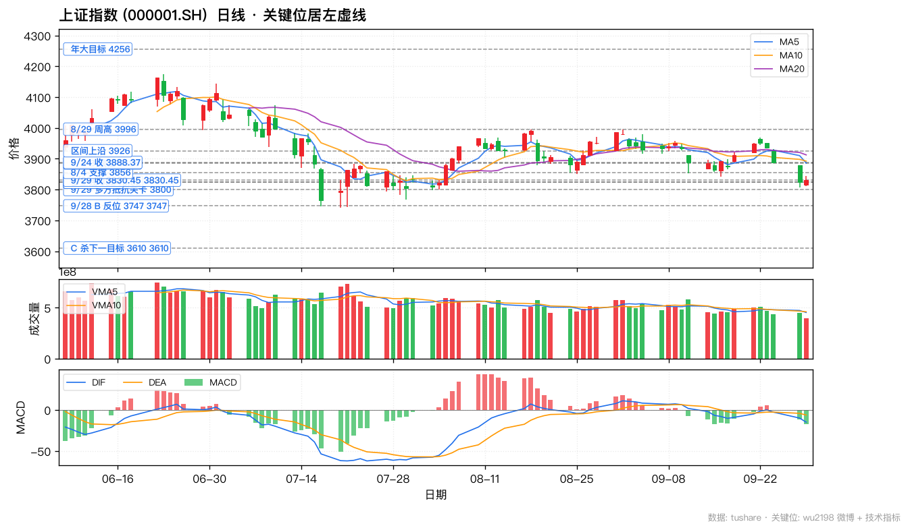
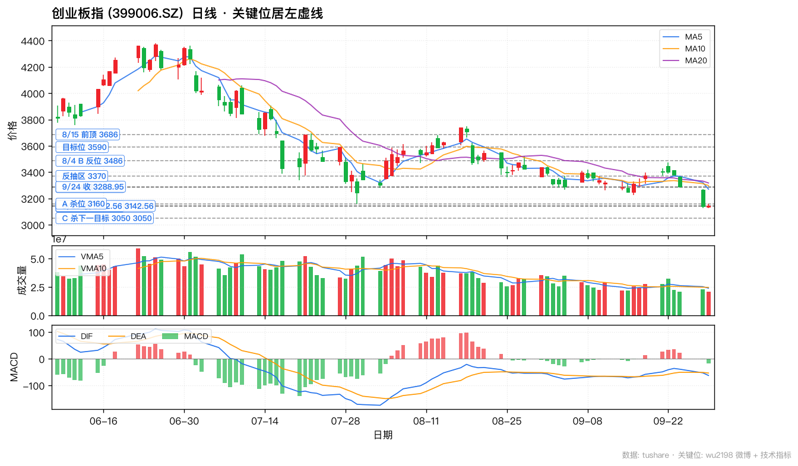
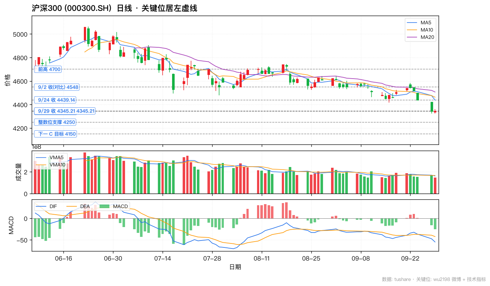
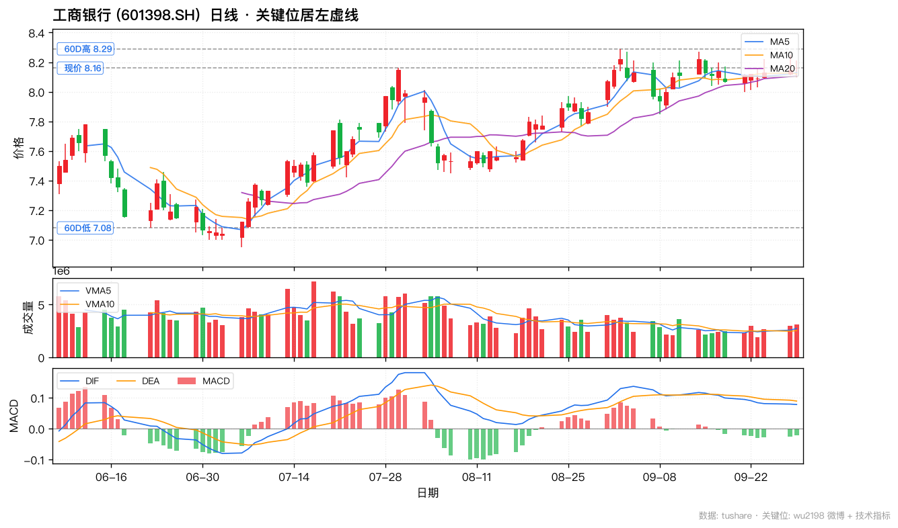
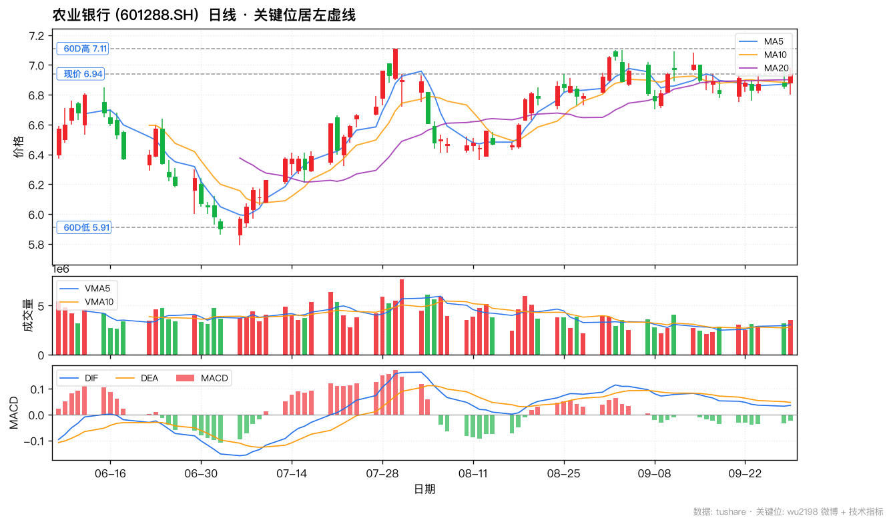
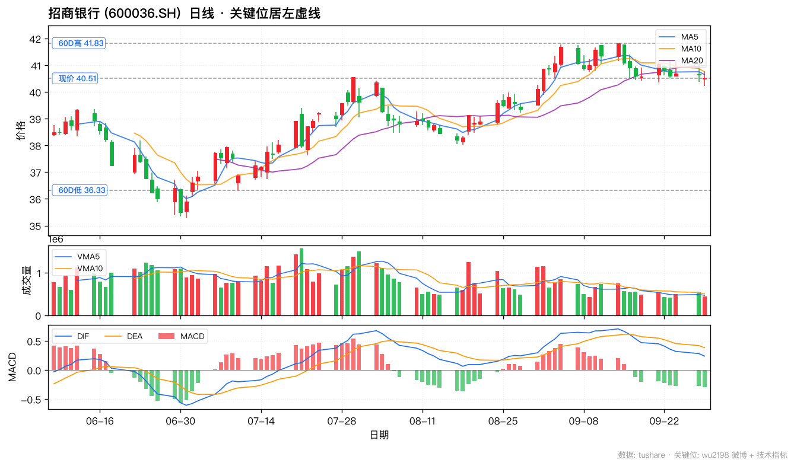
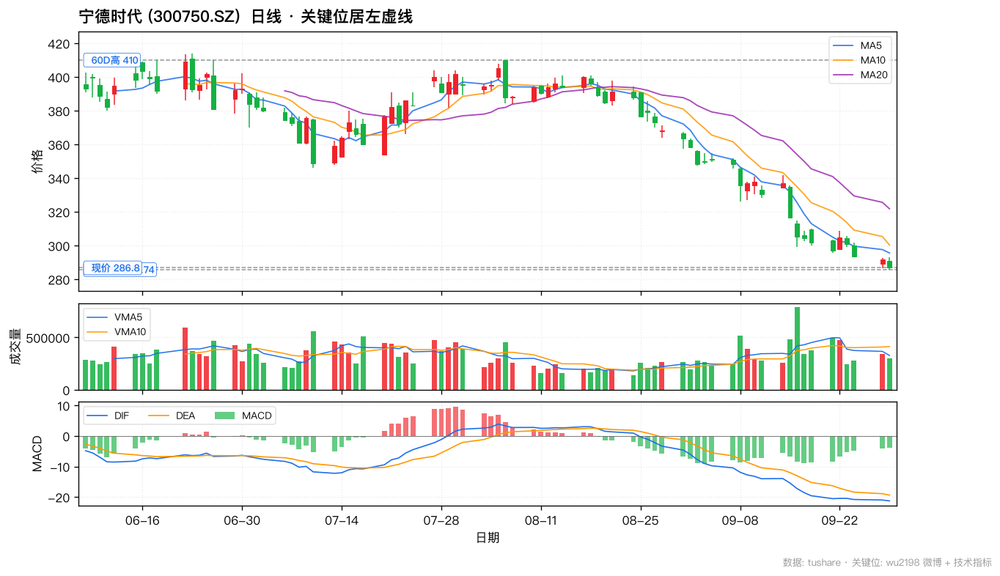
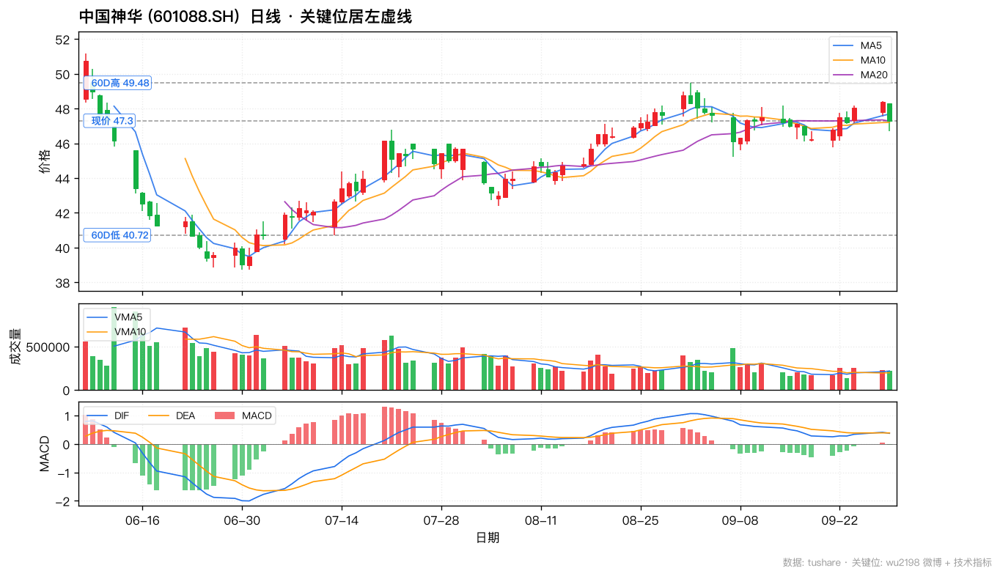
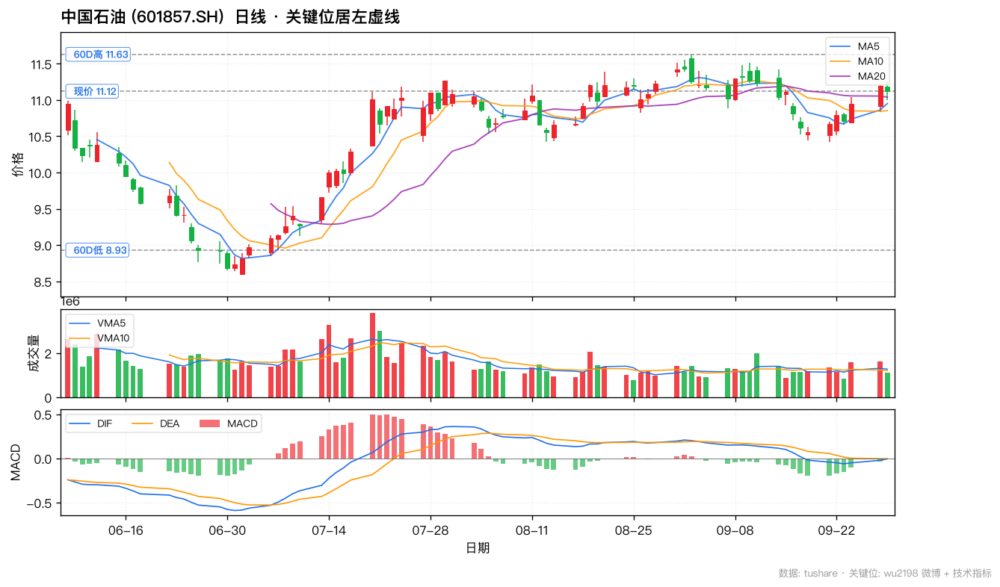

📈 wu2198 投资观点日报 · 2026-09-29
📅 2026-09-29 (周二 · 国庆前最后一个交易日)
🏛️ 沪指 3830.45 (+0.18%)
📊 创业板 3142.56 (+0.09%)
🎯 沪深300 4345.21 (+0.10%)
📊 数据源:weibo-watcher + tushare
🟡博主 9/29 核心立场:
3800 关卡多方组织小型抵抗 · 无操作空间 · 央行降息利好(PSL+再贷款)。
9/29 共 3 条带操盘信号(防御 1 + 板块速报 2 + 政策 1),
大盘 3830.45 (+0.18%) 守住 3800,
创业板 3142.56 (+0.09%) 守住 3160 A 杀位 17 点,
沪深300 4345.21 (+0.10%) 同步微红。
博主 09:45 「3800 关卡组织小型抵抗」(9220 赞全场最高), 10:39「无操作空间不要乱动」(8492 赞),
11:09 「四大行一直在提肩带」+ 11:01 「固态电池板块冲板」板块催化,
19:52 「央行下调 PSL 0.25bp + 扩大再贷款额度」宏观政策利好。
🟢 银行 (四大行验证) + 固态电池 (短线新催化) + 煤炭/石油 (防御红利延续)。
📊 核心数据卡片
博主核心立场
🟡 3800 抵抗
3 条操盘贴 · 防御 + 板块速报
沪指 9/29 收
3830.45 (+0.18%)
守住 3800 关卡 · 距 3747 B 反位 83 点
创业板 9/29 收
3142.56 (+0.09%)
守住 3160 A 杀位 17 点 · 距 3050 仅 92
沪深300
4345.21 (+0.10%)
同步微红 · 距 4250 整数位 95
博主板块速报
银行+固态电池
11:09 四大行提肩带 + 11:01 固态电池冲板
央行政策利好
PSL -25bp
六张网 + 科创再贷款 1.4 万亿 + 支农支小 4.85 万亿
📋 完整微博列表(10 条,按时间倒序)
| 时间 |
方向 |
信号 · 置信 |
类别 |
内容摘要 |
互动(转/评/赞) |
综合分 |
| Tue Sep 29 19:52 |
🟢 |
多 · 中 |
宏观/政策 |
中国人民银行进一步调整完善多项货币政策工具：下调PSL利率0.25个百分点至1.5%，扩大PSL支持领域至“六张网”建设；增加科技创新和技术改造再贷款额度2000亿元至1.4万亿元，支持比例提至100%；增加支农支小再贷款额度5000亿元至4.85万亿元。 |
R:4 C:90 L:1429 |
1613 |
| Tue Sep 29 16:55 |
⚪ |
无关 · — |
问候/鸡汤 |
炒股并非我本意，我炒的是农人生计！ |
R:9 C:288 L:4061 |
4646 |
| Tue Sep 29 15:57 |
🔴 |
空 · 高 |
操作心态 |
前面和大家说了，可以中秋+国庆一起放假……没有行情可做……广西欢迎您！ |
R:9 C:309 L:5117 |
5744 |
| Tue Sep 29 12:54 |
🟡 |
中性 · 中 |
盘中观察 |
下午还是看！ |
R:15 C:683 L:9028 |
10409 |
| Tue Sep 29 11:21 |
🟡 |
中性 · — |
互动 |
明白不？ |
R:126 C:425 L:7032 |
8008 |
| Tue Sep 29 11:09 |
🟢 |
多 · 高 |
板块速报/银行 |
其实，四大行最近一直在提肩带！ |
R:17 C:169 L:7099 |
7454 |
| Tue Sep 29 11:01 |
🟢 |
多 · 中 |
板块速报/固态电池 |
固态电池板块目前出现有几只冲板！ |
R:7 C:181 L:7122 |
7491 |
| Tue Sep 29 10:47 |
⚪ |
无关 · — |
互动 |
收到请回复666或点赞支持一下！ |
R:18 C:695 L:8044 |
9452 |
| Tue Sep 29 10:39 |
🔴 |
空 · 高 |
操作建议 |
无操作空间，不要乱动……明白666 |
R:23 C:759 L:8492 |
10033 |
| Tue Sep 29 09:45 |
🟡 |
中性 · 高 |
大盘判断 |
3800关卡附近，多方在组织小型抵抗！ |
R:38 C:403 L:9220 |
10064 |
🚦 核心操盘信号(LLM 二次摘要)
🟢 信号 1 — 09:45 大盘 3800 关卡多方组织小型抵抗 (互动最高 9220 赞)
原帖「3800关卡附近, 多方在组织小型抵抗!」(38/403/9220 · 10064 综合分 · 全场互動最高)
解读这是 9/29 最重要的一条(9220 赞 / 10064 综合分):博主明确披露 3800 整数关卡是多空双方博弈的关键。注意 9/28 收盘已跌穿 3824 多空线, 9/29 必须守住 3800 才能维持震荡格局。
- 9/29 实际:上证 3830.45 +0.18% 微红, 3800 关卡组织抵抗成功
- 创业板 9/29 收3142.56 +0.09% 微红, 守住 3160 A 杀位 17 点
- 沪深3004345.21 +0.10% 同步微红
- 操作策略:3800 抵抗成功, 节前最后一个交易日多头守住关键位, 节后观察方向
🔴 信号 2 — 10:39 无操作空间, 不要乱动
原帖「无操作空间, 不要乱动……明白666」(23/759/8492 · 10033 综合分 · 互动第二高)
解读延续 9/28 "等 C5 完成" 防御立场 —— 即使 3800 抵抗成功, 博主明确说 没有操作空间, 不要乱动。节前最后一个交易日, 博主选择观望不进场。
- 暗示:博主预期节前不会有大行情, 节后才考虑重新进场
- 与 15:57 节前清仓立场呼应:「中秋+国庆一起放假……没有行情可做……广西欢迎您」
- 操作策略:持币过节; 节后观察大盘方向
🟢 信号 3 — 11:09 四大行最近一直在提肩带 (银行板块速报)
原帖「其实, 四大行最近一直在提肩带!」(17/169/7099 · 7454 综合分)
解读博主 11:09 强化银行板块主线 —— 四大行(工行/农行/中行/建行)一直在 提肩带(=护盘/支撑大盘)。这是博主长期持有银行股分红逻辑的延续(8/31 5722 赞贴)。
- 9/29 验证:农业银行 +1.17%(银行板块涨幅第一, 六大行里表现最强); 工商银行 +0.12%
- 招商银行-0.32% 微跌 (零售之王, 相对抗跌)
- 央行 19:52 利好:PSL 下调 0.25bp 利好银行息差, 银行板块节后关注
🟡 信号 4 — 11:01 固态电池板块冲板 (短线新催化)
原帖「固态电池板块目前出现有几只冲板!」(7/181/7122 · 7491 综合分)
解读博主 11:01 给出 9/29 唯一非银板块速报:固态电池板块几只股票冲板(封涨停)。这是博主 首次在本轮调整中提到固态电池。注意博主 9/29 11:01 与 11:09 间隔仅 8 分钟, 同时点出固态电池和银行。
- 核心标的:宁德时代 (300750) 是固态电池龙头
- 短线属性:博主用「冲板」描述, 说明是短线催化而非主线
- 9/29 实际:宁德时代收 286.80 -1.78% 回调, 板块分化; 关注 9/30 是否延续
- 操作策略:短线博弈, 快进快出; 不要重仓 (博主主线仍是银行)
🟢 信号 5 — 19:52 央行降息+扩信用 (宏观政策利好)
原帖「中国人民银行进一步调整完善多项货币政策工具:下调 PSL 利率 0.25 个百分点至 1.5%, 扩大 PSL 支持领域至'六张网'建设; 增加科技创新和技术改造再贷款额度 2000 亿元至 1.4 万亿元, 支持比例提至 100%; 增加支农支小再贷款额度 5000 亿元至 4.85 万亿元。」(4/90/1429 · 1613 综合分)
解读央行 9/29 晚间发布三大货币政策利好(节前最后一条), 三大要点:
- ① PSL 利率下调 0.25bp 至 1.5% — 降低政策性贷款成本, 利好 银行息差 + 基建「六张网」(物流网/能源网/水利网/市政管网/信息网/综合交通网)
- ② 科技创新和技术改造再贷款 +2000 亿至 1.4 万亿, 支持比例 100% — 加码科创, 利好 科技/科创板/创业板
- ③ 支农支小再贷款 +5000 亿至 4.85 万亿 — 加码中小微企业, 利好 农业/小微/普惠金融
节前情绪利好:三大工具合计释放 约 7000 亿 + PSL 利率成本下降, 节后首日(10/9)关注银行/基建/科创板块表现。博主 9/29 19:52 把这条作为当天最后一条, 重要性高于互动贴。
💼 3 大板块 + 6 支个股
选股原则:博主 9/29 实际提及 + 央行政策利好 + 节前防御逻辑。9/29 3800 关卡组织抵抗成功, 银行板块四大行验证「提肩带」+1.17%/+0.12%, 固态电池板块冲板(短线), 煤炭/石油延续防御红利。
🟢 银行 (博主 11:09 四大行一直在提肩带 + 央行 19:52 PSL -25bp 利好息差)
🟢 工商银行 (601398.SH) · 9/29 收 8.16 (+0.12%)
9/29 收 8.16 +0.12% 微红, 博主长期持有银行股分红逻辑 (5722 赞延续); 央行 9/29 19:52 下调 PSL 0.25bp 利好银行息差; A 股市值最大银行, 某队重仓基地, 股息率 ~5.5%
关键位:60D高 8.29 / 60D低 7.08 / 120D高 8.29 / 120D低 6.95 / 现价 8.16
🟢 农业银行 (601288.SH) · 9/29 收 6.94 (+1.17%)
9/29 收 6.94 +1.17% 银行板块涨幅第一, 印证博主 11:09 「四大行一直在提肩带」; 央行降息+再贷款利好国有大行; 国有大行高股息防御; 60D 高 7.11 / 60D 低 5.79
关键位:60D高 7.11 / 60D低 5.91 / 120D高 7.29 / 120D低 5.79 / 现价 6.94
🟡 招商银行 (600036.SH) · 9/29 收 40.51 (−0.32%)
零售之王 ROE 15%, 博主 8/31 关注; 9/29 收 40.51 -0.32% 微跌但相对抗跌; 央行降息影响净息差但零售业务韧性弱估值溢价; 60D 高 41.83 / 60D 低 36.33
关键位:60D高 41.83 / 60D低 36.33 / 120D高 41.83 / 120D低 35.28 / 现价 40.51
🟢 固态电池 (博主 11:01 板块冲板 - 短线新催化, 注意快进快出)
🟡 宁德时代 (300750.SZ) · 9/29 收 286.80 (−1.78%)
9/29 收 286.80 -1.78% 博主 11:01 「固态电池板块出现几只冲板」核心龙头标的; 固态电池产业化加速, 锂电产业链龙头; 60D 高 308 / 60D 低 235; 短线注意博主 11:09 后续是否继续板块催化
关键位:60D高 410.0 / 60D低 285.74 / 120D高 468.75 / 120D低 285.74 / 现价 286.8
🟢 煤炭 (博主 8/31 权重推动 + 9/28 唯一红盘领涨权重 + 9/29 节前获利兑现)
🟡 中国神华 (601088.SH) · 9/29 收 47.30 (−2.25%)
9/29 收 47.30 -2.25% 节前获利兑现; 博主 9-04 体系内唯一强势标的延续; 煤电路港航化一体化, 股息率 5%, 现金奶牛; 冬季用煤旺季 + 油价支撑; 60D 高 49.48 / 60D 低 38.73
关键位:60D高 49.48 / 60D低 40.72 / 120D高 51.18 / 120D低 38.73 / 现价 47.3
🟢 石油化工 (博主 8/31 权重推动 + 9/28 涨幅最大权重 + 央行六张网建设利好基建用油)
🟡 中国石油 (601857.SH) · 9/29 收 11.12 (−0.63%)
9/29 收 11.12 -0.63% 跟随指数回调; 博主 9/28 权重推动 + OPEC+ 减产 + 中东地缘双重支撑; 国内最大油气, PB 0.9x 股息率 4.5%; 央行 9/29 六张网建设利好基建用油; 60D 高 11.63 / 60D 低 8.85
关键位:60D高 11.63 / 60D低 8.93 / 120D高 12.36 / 120D低 8.59 / 现价 11.12
📉 K 线图(关键位居左虚线标注)
🟢 上证指数 (000001.SH) · 9/29 收 3830.45 (+0.18%)

关键位(12 个):C 杀下一目标 3610 3610 / 9/28 B 反位 3747 3747 / 9/29 多方抵抗关卡 3800 / 9/28 收 3823.62 / 多空线 3824 / 9/29 收 3830.45 3830.45 / 8/4 支撑 3856 / 8/4 B 浪位 3886 / 9/24 收 3888.37 / 区间上沿 3926 / 8/29 周高 3996 / 年大目标 4256
🟢 创业板指 (399006.SZ) · 9/29 收 3142.56 (+0.09%)

关键位(10 个):C 杀下一目标 3050 3050 / 9/28 收 3139.82 / 9/29 收 3142.56 3142.56 / A 杀位 3160 / 8/4 试破位 3286 / 9/24 收 3288.95 / 反抽区 3370 / 8/4 B 反位 3486 / 目标位 3590 / 8/15 前顶 3686
🟢 沪深300 (000300.SH) · 9/29 收 4345.21 (+0.10%)

关键位(7 个):下一 C 目标 4150 / 整数位支撑 4250 / 9/28 收 4340.76 / 9/29 收 4345.21 4345.21 / 9/24 收 4439.14 / 9/2 收(对比) 4548 / 前高 4700
🟢 工商银行 (601398.SH) · 银行/防御红利 · 9/29 收 8.16 (+0.12%)

9/29 收 8.16 +0.12% 微红, 博主长期持有银行股分红逻辑 (5722 赞延续); 央行 9/29 19:52 下调 PSL 0.25bp 利好银行息差; A 股市值最大银行, 某队重仓基地, 股息率 ~5.5%
关键位:60D高 8.29 / 60D低 7.08 / 120D高 8.29 / 120D低 6.95 / 现价 8.16
🟢 农业银行 (601288.SH) · 银行/防御红利 · 9/29 收 6.94 (+1.17%)

9/29 收 6.94 +1.17% 银行板块涨幅第一, 印证博主 11:09 「四大行一直在提肩带」; 央行降息+再贷款利好国有大行; 国有大行高股息防御; 60D 高 7.11 / 60D 低 5.79
关键位:60D高 7.11 / 60D低 5.91 / 120D高 7.29 / 120D低 5.79 / 现价 6.94
🟡 招商银行 (600036.SH) · 银行/防御红利 · 9/29 收 40.51 (-0.32%)

零售之王 ROE 15%, 博主 8/31 关注; 9/29 收 40.51 -0.32% 微跌但相对抗跌; 央行降息影响净息差但零售业务韧性弱估值溢价; 60D 高 41.83 / 60D 低 36.33
关键位:60D高 41.83 / 60D低 36.33 / 120D高 41.83 / 120D低 35.28 / 现价 40.51
🟡 宁德时代 (300750.SZ) · 固态电池/新催化 · 9/29 收 286.80 (-1.78%)

9/29 收 286.80 -1.78% 博主 11:01 「固态电池板块出现几只冲板」核心龙头标的; 固态电池产业化加速, 锂电产业链龙头; 60D 高 308 / 60D 低 235; 短线注意博主 11:09 后续是否继续板块催化
关键位:60D高 410.0 / 60D低 285.74 / 120D高 468.75 / 120D低 285.74 / 现价 286.8
🟡 中国神华 (601088.SH) · 煤炭/红利防御 · 9/29 收 47.30 (-2.25%)

9/29 收 47.30 -2.25% 节前获利兑现; 博主 9-04 体系内唯一强势标的延续; 煤电路港航化一体化, 股息率 5%, 现金奶牛; 冬季用煤旺季 + 油价支撑; 60D 高 49.48 / 60D 低 38.73
关键位:60D高 49.48 / 60D低 40.72 / 120D高 51.18 / 120D低 38.73 / 现价 47.3
🟡 中国石油 (601857.SH) · 石油化工/能源安全 · 9/29 收 11.12 (-0.63%)

9/29 收 11.12 -0.63% 跟随指数回调; 博主 9/28 权重推动 + OPEC+ 减产 + 中东地缘双重支撑; 国内最大油气, PB 0.9x 股息率 4.5%; 央行 9/29 六张网建设利好基建用油; 60D 高 11.63 / 60D 低 8.85
关键位:60D高 11.63 / 60D低 8.93 / 120D高 12.36 / 120D低 8.59 / 现价 11.12
⚠️ 风险提示
- 🔴 9/29 节前清仓立场 — 博主 10:39「无操作空间不要乱动」+ 15:57「中秋+国庆一起放假……没有行情可做」, 节前博主已选持币过节
- 🔴 9/29 大盘仍弱于 9/28 多空线 3824 — 9/29 收 3830.45 虽微红 +0.18%, 但仍 < 9/28 收盘 3823.62 上方 6.83 点, 趋势未变; 9/28 已失守的多空线 3824 是新压力位
- 🔴 创业板仍失守 3160 A 杀位 — 9/29 收 3142.56 +0.09% 微红, 但仍未收复 3160(仍差 17 点), 创业板整体仍在 9/28 弱势结构内
- 🔴 博主 6/8 撤离本金+去年盈利一半, 预测偏多但实际行动更看空 — 实际仓位决策比预测更看空
- ⚠️ 博主 9/28 19:26 自述:等 C5 完成才能干 — 9/29 3800 抵抗成功仅是 小型抵抗, 不是反转; 节后 C 杀结构可能延续
- ⚠️ 博主长期风控底线:不举债 / 不杠杆 / 只用闲钱 / 无技术不参与短线
- 🟢 9/29 银行板块验证博主「四大行提肩带」 — 农行 +1.17%(六大行涨幅第一) / 工行 +0.12%, 节前防御主线兑现; 央行 19:52 PSL -25bp 利好银行息差
- 🟢 央行 9/29 19:52 三大政策利好 — ① PSL -25bp (银行+基建) ② 科创再贷款 1.4 万亿 (科技+创业板) ③ 支农支小 4.85 万亿 (普惠), 节后 10/9 关注落地
- 🟢 6 大权重 60D 高未破位 — 工行 8.16 vs 60D高 8.29 (差 0.13) / 农行 6.94 vs 60D高 7.11 (差 0.17) / 招行 40.51 vs 60D高 41.83 (差 1.32) / 神华 47.30 vs 60D高 49.48 (差 2.18) / 中石油 11.12 vs 60D高 11.63 (差 0.51), 5/5 银行/能源权重 60D 高未破位
🎯 操作建议汇总
📌 大盘
短期(9/29 起 1-2 周 / 国庆假期):🟡 节前 3800 抵抗成功 · 节后观察方向。9/29 微红守住 3800, 但 9/28 多空线 3824 已失守成为新压力, 趋势未变。
- 9/29 上证 3830.45 +0.18%:守住 3800 关卡, 距博主 3747 B 反位 83 点; 3824 多空线是节后第一观察点
- 9/29 创业板 3142.56 +0.09%:守住 3160 A 杀位 17 点; 距 3050 C 杀目标 92 点
- 乐观情景:节后 10/9 在 3800-3850 区间震荡, 维持小型抵抗; 央行 19:52 利好落地
- 悲观情景:节后直接跌破 3800, 触发博主「C 杀」加速, 下看 3747-3650
- 关键操作:博主已自述「等 C5 完成才能干」+ 9/29「无操作空间不要乱动」, 散户策略:持币过节, 节后观察方向
📌 板块策略
- 🟢 防御主线(9/29 验证):银行 — 博主 9/29 11:09「四大行一直在提肩带」, 9/29 农行 +1.17% 涨幅第一兑现; 央行 19:52 PSL -25bp 利好银行息差; 节前/节日后持有
- 🟢 短线:固态电池 — 博主 9/29 11:01「板块出现几只冲板」, 短线新催化; 注意快进快出; 9/30 是否延续是关键
- 🟢 防御红利(延续):煤炭 + 石油化工 — 博主 8/31 长期红利逻辑延续; 9/29 神华 -2.25% / 中石油 -0.63% 节前获利兑现, 长期红利逻辑不变
- 🟡 适度关注:券商 / 保险 — 博主 9/1 提到「银行、证券、保险、白酒 4 大权重拉指数」, 9/29 央行降息利好若落地, 券商可能有补涨
- 🔴 回避:创业板 / 成长股 — 9/29 收 3142.56 仍失守 3160 A 杀位; 博主 9/28 15:20 创业板调整以来新低确认
- 🔴 回避:黄金 / 商品 — 博主 8/29 伦敦金大跌 -2.95%, 8/15 警示白酒「中央汇金证金清仓贵州茅台」, 不在 9/29 推荐之列
📌 6 支个股监控
| 标的 | 板块 | 支撑 | 9/29 收 | 压力 | 60D高 | 监控动作 |
|---|
| 工商银行 601398 | 银行 | 7.50 / 7.08 | 8.16 (+0.12%) | 8.29 / 9.30 | 8.29 | 持有 · 9/29 微红 · 60D 高 8.29 未破位 · 节前防御 |
| 农业银行 601288 | 银行 | 6.20 / 5.91 | 6.94 (+1.17%) | 7.11 / 7.50 | 7.11 | 持有 · 验证博主「四大行提肩带」银行板块涨幅第一 · 60D 高未破位 |
| 招商银行 600036 | 银行 | 38.00 / 36.33 | 40.51 (-0.32%) | 41.83 / 45.0 | 41.83 | 持有 · 零售之王 · 弹性大但 9/29 微跌 · 60D 高未破位 |
| 宁德时代 300750 | 固态电池 | 235 / 286 | 286.80 (-1.78%) | 320 / 410 | 410 | 短线博弈 · 博主 11:01「板块冲板」 · 快进快出 |
| 中国神华 601088 | 煤炭 | 45.0 / 40.72 | 47.30 (-2.25%) | 49.48 / 53.0 | 49.48 | 持有 · 节前回调 · 长期红利逻辑延续 · 60D 高 49.48 未破位 |
| 中国石油 601857 | 石油 | 10.0 / 8.93 | 11.12 (-0.63%) | 11.63 / 13.0 | 11.63 | 持有 · 节前跟随指数回调 · 央行六张网建设利好 · 60D 高未破位 |